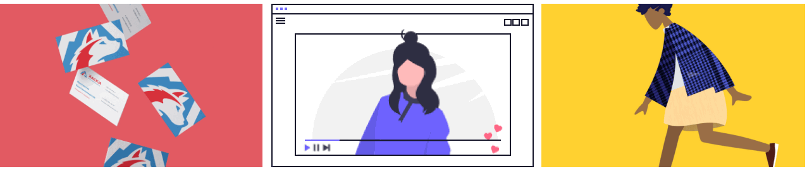
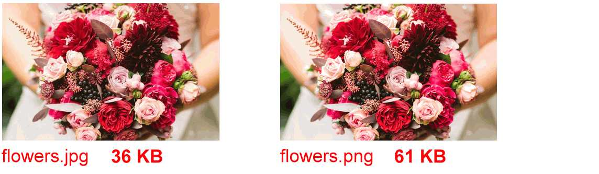

Learning Goals
At the end of this Tutorial, you will be able to:
- Know when to use the JPG and PNG file formats for bitmap images.
- Be familiar with common sources of free-to-use stock images.
About bitmap and vector images
Two different types of images can be displayed in web pages:
- Bitmap images: These are made up of tiny dots. The more dots per screen area, the higher the resolution of the image. Resizing bitmap images produces a ‘pixellated’ effect with the result that image quality is degraded: the image becomes blurry and the edges around shapes can appear jagged. Bitmap images can be created and edited with applications such as Adobe Photoshop, Gimp, Microsoft Paint, and Apple Paintbrush.
- Vector images: These contain mathematical formulas that create lines, curves and other shapes. A vector image can be smoothly scaled up or down, so the result is just as sharp as the original. Vector images can be created and edited with applications such as Adobe Illustrator, CorelDRAW, Affinity Designer, and Inkscape.
The illustration below is from Bitmaps versus Vectors: Graphics files and formats, by the School of Computer Science and Information Technology, University College Cork.

On web pages, vector images are displayed in svg format.
This Tutorial focuses only on bitmap images, and on the two main bit-mapped image formats: the jpg and the png format.
JPG format images
This format (pronounced jay-peg) is the best choice for displaying photographs that contain lots of colours and colour gradations. It is not recommended for images containing text, line drawings or areas of solid colour.
Image files in this format end with the filename extension .jpg or .jpeg. You can see some examples of typical JPG-format images below.

PNG format images
This format (pronounced pea-n-g) is typically used for images that contain areas of solid colour, for logos and icons, for text, and for charts, diagrams and line drawings.
Below are some examples of images suited to this file format. Such files end with the extension .png.
Photographic images can also be saved in PNG-format and will display in a web page with the same quality as if they were JPGs. But the image file sizes will be larger and, as a result, the web page will take longer to load.
A feature of PNG format images is that, unlike JPG files, they can have transparent backgrounds.
Where to find copyright-free images
A wide range of so-called stock photography websites exists from where you can download, modify and use copyright- and royalty-free images, whether for personal, not-for-profit or commercial web projects.
In most cases, you do not need to credit the image’s creator, but it is good practice and courteous to do so.
Here are some popular sources of general-purpose stock images:
Here are some online libraries that offer less generic and more stylised photography:
The Internet’s largest collection of free online images is the one below. It includes vintage photography and reproductions of classic works of art:
For a wide-ranging list of online image libraries, from the National Library of Ireland to the British Library and NASA, visit the following article from CSS Tricks.
For illustrations rather than photographs, here are four open-source collections of vector images. Files can be downloaded as bitmap images in PNG-format.
Further resources
A quick guide to website photography
By Eric Karkovack at Speckyboy